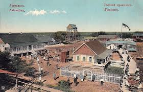

История Астрахани
Город впервые упоминается в XIII веке как Хаджи-Тархан (حاجی ترخان) – крупный торговый центр Золотой Орды, расположенный на Волге.
- 1333 год – арабский путешественник Ибн Баттута описывает его как большой город с многонациональным населением.
- 1459–1556 годы – столица Астраханского ханства, образовавшегося после распада Золотой Орды.
- В 1558 году русские построили новую крепость на другом берегу Волги, сохранив старое название в форме "Астрахань".
Происхождение названия
Есть несколько версий:
- От тюркского "Хаджи-Тархан" – возможно, означало "место, освобождённое от налогов" (тархан – льгота, хаджи – паломник).
- Персидское влияние – некоторые связывают с словом "астархан" (перс. اَستَرْخان) – "низкий", "прибрежный".
- Народная этимология – русские переосмыслили название как "Аз-Тархан" (город у границы с Азией).
Современность: возрождение традиций
- Сегодня Астрахань – это центр рыболовства, газодобычи и туризма (особенно лотосовые поля и кремль).
- Каждый год проходит фестиваль "Селигерский берег" (казачьи традиции) и "Арбузный фестиваль".